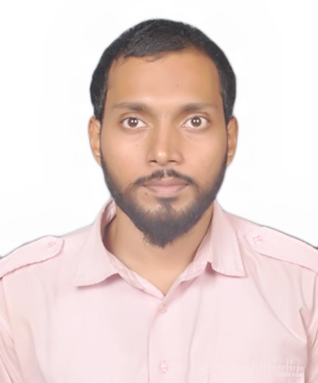
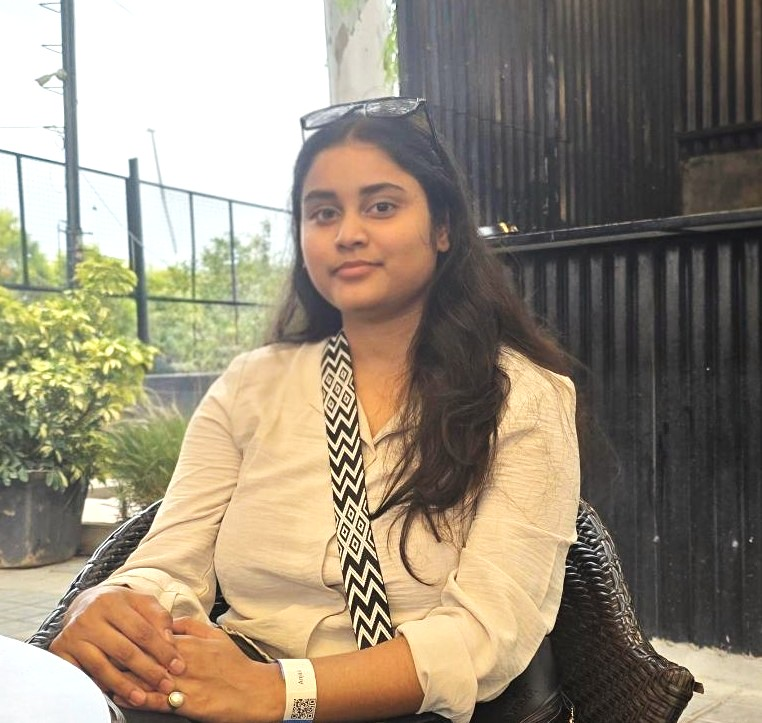
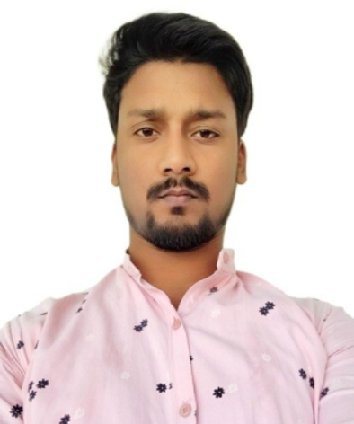
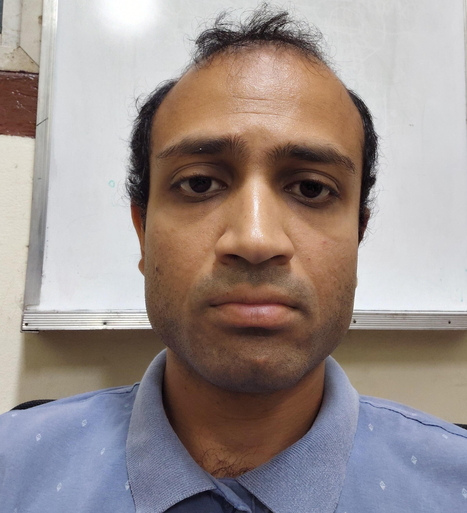

Current members
Faculty
- S. KarthikeyanPrincipal investigator

Students
Hover over a student’s photograph, or tap it, to see the current work.
- Mohan Kumar NPhD student, since 2020Mohan Kumar NLightweight Al–Al3Ti metal–intermetallic laminates for armour: dynamic energy absorption and ballistic penetration resistance.
- Dapulou JosephPhD student, since 2024Dapulou JosephSolid-particle and water-droplet erosion of turbomachinery components, including in hydrogen environments.
- Prasant Kumar SahayPhD student, since 2025

Prasant Kumar SahayMachine-learning surrogate models for ballistic impact, and inverse models that predict constitutive behaviour. - Prince ParimalPhD student, since 2025Prince ParimalProcessing and phase stability of rare-earth-lean permanent magnets.
- Anjali MandalPhD student, since 2025

Anjali MandalMachine-learning forensic analysis of bullets that have struck soft or hard targets. - Akram RazaPhD student, since 2026

Akram RazaHigh-throughput development of constitutive models. - Abhijeet MohantaPhD student, since 2026Abhijeet MohantaAI/ML-guided design of recycled aluminium alloys.


Post-docs
- Vaishali PrasannaPost-doctoral researcher, since 2025
- Sazid KhanPost-doctoral researcher, since 2026


Research staff
- Saem AhmedResearch staff

Administrative staff
- Ms. Shalini RajagopalAdministrative Manager

Joining the group
I welcome inquiries from PhD applicants and post-doctoral researchers who like to work at the boundary of experiment and computation. Please email me a short note on your background and the question that interests you, with your CV for post-doctoral inquiries. PhD admission is through the Institute’s selection process.
Alumni
PhD and MSc (Res.)
Year of degree and current occupation.
| Name | PhD/MSc (Res.) | Where are they now? |
|---|---|---|
| Shiba Shankar Dash | 2026 | PhD, Texas A&M |
| Sazid Khan | 2026 | Post-doctoral researcher, IISc |
| Subham Mridha | 2023 | Senior Consultant, EY, Bengaluru |
| Shailendra Kumar Verma | 2023 | Post-doctoral researcher, IIT Kanpur |
| Biswaranjan Dash | 2018 | Lead, Product Dev Apps Engineer, KLA |
| K.V. Vamsi | 2018 | Assistant Professor, IIT Indore |
| Aparajita Pramanik | 2018 | Post-doctoral researcher, IISc |
| U. Sai Babu | 2018 | Machine learning engineer, RLE India |
| Veerababu Rowthu | 2016 | Scientist, DMRL |
| Hindol Bandyopadhyay | 2014 | Research Engineer, Applied Materials, Bengaluru |
| R. Prasath Babu | 2013 | Senior R&D Engineer, Outokumpu, Sweden |
Other PhD students who have worked closely with me
Year of degree and current occupation.
| Name | PhD/MSc (Res.) | Where are they now? |
|---|---|---|
| Shalini Roy Koneru | 2019 | Lead Scientist, materials, GE Vernova |
| Swati Biswas | 2019 | Scientist G, GTRE |
| Priyanka Agrawal | 2017 | Research Assistant Professor, University of North Texas, USA |
| Rajesh Korla | 2015 | Associate Professor, IIT Hyderabad |
Post-doctoral researchers
| Name | Now |
|---|---|
| S. Arun | Assistant Professor, NIT Calicut |
| K. G. Raghavendra | Assistant Professor, Manipal Institute of Technology |
| Raghavendra Rao Julluri | Assistant Professor, RGUKT Ongole |
| R. Anbukkarasi | Assistant Professor, IIT Dharwad |
| Anup Mandal | Post-doctoral Fellow, IISc |
Master’s and project students
MTech and BS/MS project students from the group have gone on to PhD programmes at IISc, IIT Bombay, Purdue, Georgia Tech, the University of Connecticut, and the Max Planck Institute, and to industry. Two have co-founded start-ups.